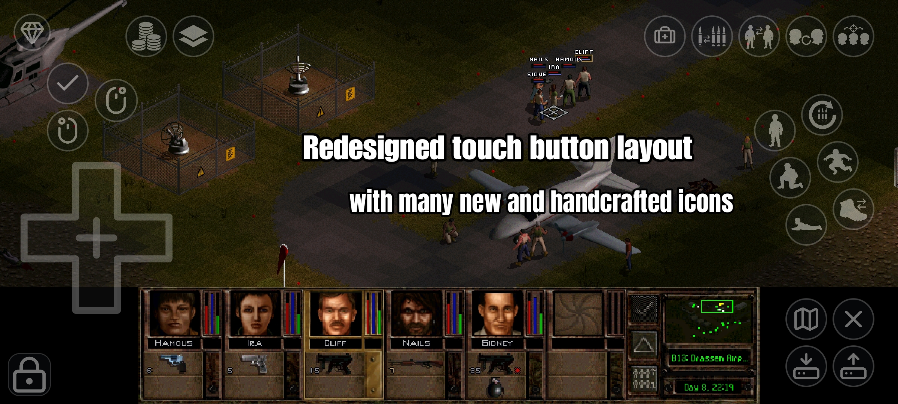
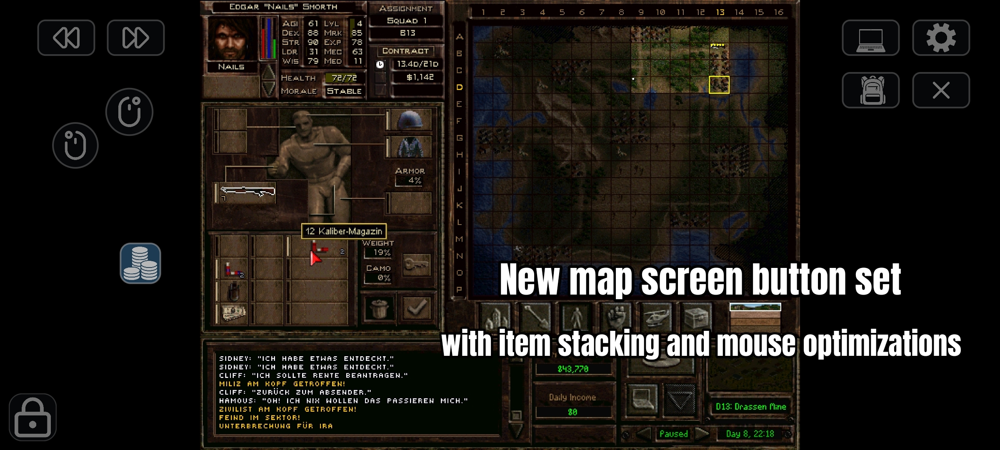
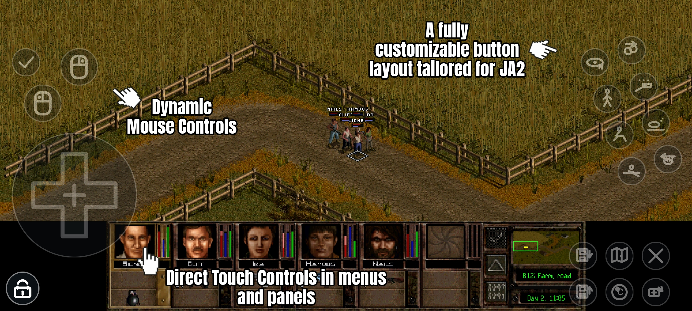
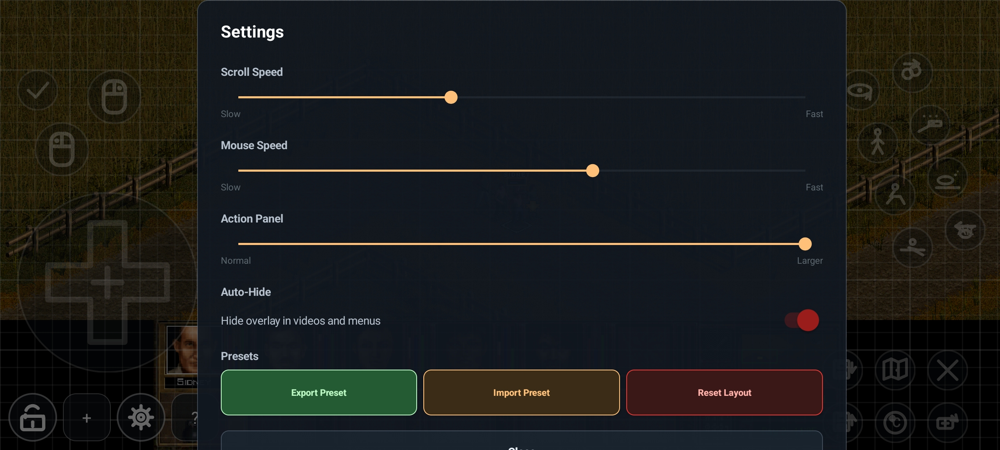
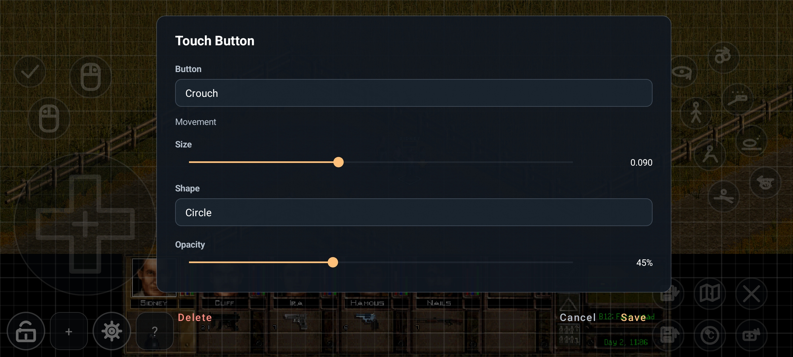
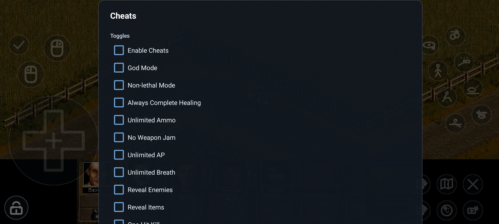

A fully modernized Jagged Alliance 2 Stracciatella experience, specially designed for Android touch mobile devices.
You need to own a copy of Jagged Alliance 2 (v1.0 – v1.12). JA2 Reborn does not provide any game files.
Create a folder on your Android device where JA2 Reborn
will read the game data from, e.g. /sdcard/games/jaggedalliance2.
Copy the data folder of your Jagged Alliance 2
installation into this directory, so you end up with
/sdcard/games/jaggedalliance2/data.
Select the game directory within the start launcher and choose the correct language of your game files.
Game files: English, German, French, Italian, Spanish, Russian, Polish, Simplified Chinese, and Dutch.
Reborn UI: English and German.
JA2 Reborn targets the original Jagged Alliance 2 data. Unfinished Business, Wildfire, JA2 1.13, and other standalone or heavily modified JA2 data sets are not supported.
JA2 Reborn 1.0.4 delivers a major touch-overlay overhaul with hand-crafted SVG icons, a dedicated Map Screen button set, a true Mouse & Keyboard mode, and dozens of widescreen and usability fixes.
crashlog-latest.txt next to the emergency savegame when possible.If you enjoy JA2 Reborn, consider ☕ buying me a coffee.
With JA2 Reborn, Jagged Alliance 2 feels like a native Android game.

Version 1.0.4 — New Icon Set & Map Screen Overlay
Version 1.0.4 — Mouse & Keyboard Mode & Widescreen Fixes
Dynamic Touch Interface
Extended Gameplay Settings
Customizable Button Layout
Ingame Cheat Menu